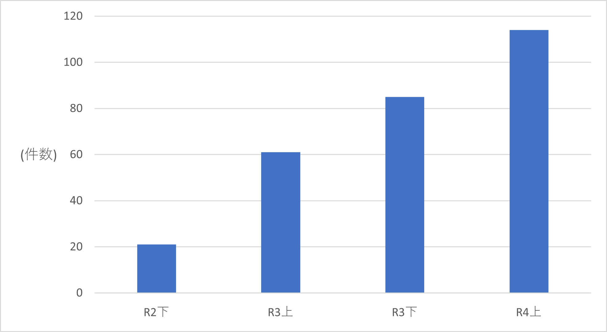
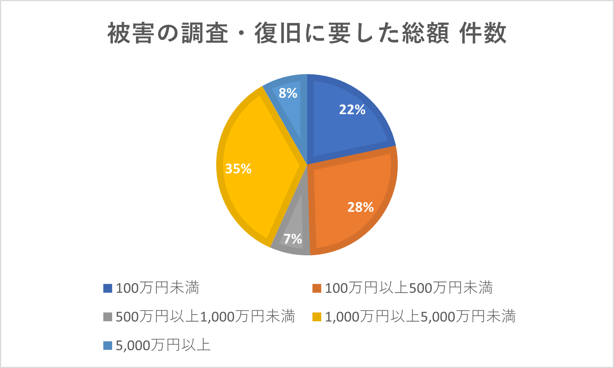
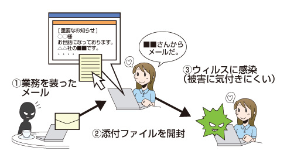
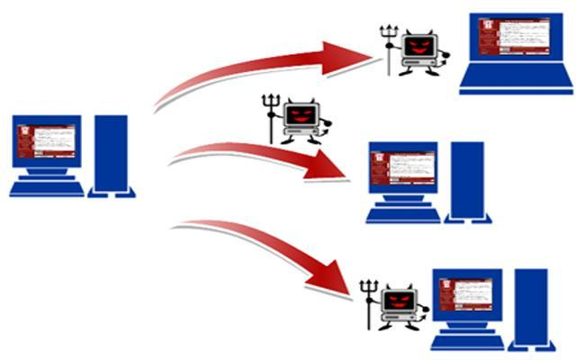

2.ランサムウェアについての現状とリスクを説明
2.ランサムウェアについての現状とリスクを説明
下図の
ランサムウェアの被害拡大のデータより、ランサムウェアの被害は増加しています。また、企業を狙った攻撃だけではありません。大学を狙った事例も報告されており、
今年の春には北海道の
室蘭工業大学でも被害が報告されています。このことから、私たち未来大生も危機感をもって知識を身に付け自衛することが大切です。

図：企業・団体等におけるランサムウェア被害の報告件数の推移

図：令和3年におけるサイバー空間をめぐる驚異の情勢等について 警察庁
3.代表的なの手口の対策
3.代表的なの手口の対策
セキュリティソフトについて
セキュリティソフトは悪意のあるプログラムを遮断したり、PC内をスキャンするなどしてPC
を守ってくれるので絶対に入れるようにしましょう。
メールから感染させる
対策1：不用意に送られてきたメールを開かない。
対策2：メールの送信者に別の手段で確認をとる。
対策3：メールに添付されているファイルやリンクを開かない。特にMicroSoftのofficeファイルを開くときには注意が必要です。

引用:
標的型攻撃への対策｜社員・職員全般の情報セキュリティ対策｜企業・組織の対策｜国民のための情報セキュリティサイト
ネットワーク経由で感染させる
対策1：OSやアプリケーションのアップデートを定期的行う。
対策2：データのバックアップ定期的に行う

引用:
ランサムウェアにご注意！|大阪府警本部
感染してしまった場合の対応
身代金の要求を拒否する・・・支払ってしまった場合、犯罪組織の活動資金となってしまいます。
また、支払っても金銭が帰ってくる保障はありません。
感染したPCをネットワークから切り離す・・・ウイルスに感染したPCから同一ネットワーク上のデバイスに被害が及ぶ可能性があります。
バックアップしたデータを使って復元する・・・バックアップを日ごろからとっておくことで被害を抑えることができます。
NoMoreRansomを参照することでランサムウェアによって暗号化されたファイルを元に戻すための復号ファイルが手に入る可能性があります。このサービスは誰でも利用することができます。